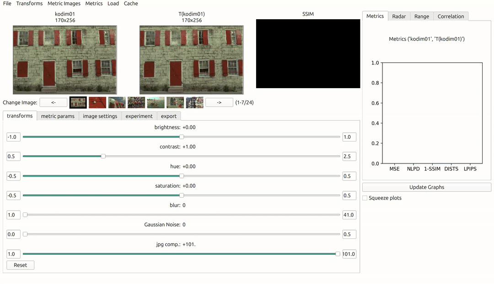

IQM-Vis documentation
IQM-Vis is an image quality metric visualisation toolbox to facilitate visualising and evaluating image quality metrics (IQMs). View our demonstration video which illustrates the features and how to use IQM-Vis.
Read our PAPER for in depth details of the software.
Quantitive Analysis
IQM-Vis is able to provide a comprehensive analysis of IQMs through various quantitative graphs. These graphs offer practitioners a well-rounded understanding of how different IQMs perform under different scenarios without having to write any code to set up the testing procedure.

Qualitative Analysis
Users are able to investigate the effects of distortions visually in two ways. Firstly by visually inspecting the transformed/distored image to make sure the distortion and parameters behave as expected. Secondly by analysing the spacial effects of IQMs, e.g. the image of an SSIM reponse.
Correlation to Human Perception
IQM-Vis facilitates the conduction, data management and analysis of the human perception experiments. See the “Running an Experiment” tutorial for further details on experiments.
Any image distortions which do not conform to the correlation can be selected for further analysis of the image properties.

Source Code
You can visit the source code on GitHub .
What is an IQM?:
About IQM-Vis:
Getting Started:
Tutorials:
Documentation: